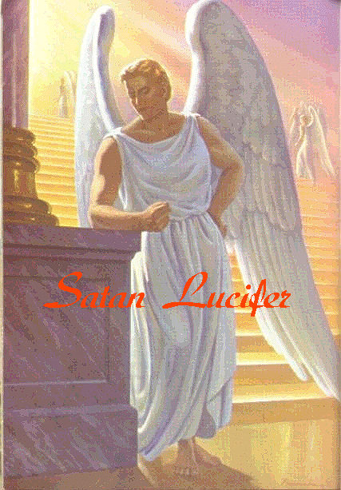
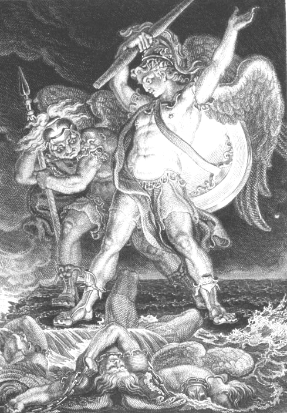
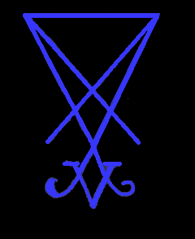
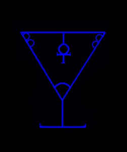
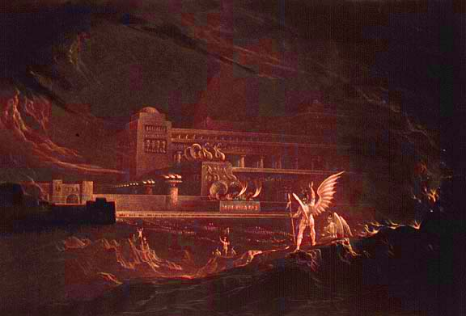

For too long, so many lies and so much misinformation have been spread about Satan. Many of us have seen him, have conversed with him, and have even been astrally touched by him. Nearly all of us who know him agree concerning his appearance. Enemy so-called "religions" have for far too long, written the book on how they believe him to appear, how they believe Demons to look and these are nothing but blasphemous lies. He is not red with horns and a tail, nor does he look like a Halloween monster. He does not have flaming red eyes or rubbery wings. These depictions are intended to insult, denigrate, and blaspheme him. [There are some lower orders of Demons. They are protectors and messengers who serve the higher-ranking Demons]. Here are images of how Satan appears to those of us who have seen him. Contrary to Satanism being labeled as "darkness," Satan appears wearing a long white robe identical to what he is shown wearing in the images below. He is the Top Leader of the Nordic Gods of the Empire of Orion. Many of us see him often and have a very close relationship with him. He is beautiful. His appearance is almost exactly as in the pictures, other than he rarely appears with wings.

ClickHEREfor larger image.
Here is an old painting by Edward Burney from the epic of "Paradise Lost."

{kind=link}
Father Satan's Sigils. The Sigil with the ankh inside of the cup, symbolizes the cup with the elixir of life. This is the "Holy Grail" of immortality. The Holy Grail is the 666 Solar Chakra.
|  |  |
- His Day is Monday.
- His Colors are Blue, Red, and Black
He is the Sumerian God EA, also known as ENKI which means "Lord of the Earth." He is also known as Melek Ta'us. - Animals that are sacred to him are the Peacock, the Serpent, the Goat, the Dragon and the Raven.
- His numbers are 13, 666 and 4. [666 is perfection and everlasting life]
- His Zodiac Signs are Aquarius, the Water Bearer and Capricorn, the Goat. [The Age of Aquarius is the Age for the advancement of humanity]
- His Planets are Uranus and Venus [the Morning Star].
- His Directions are both South and East
- His most Important Day of the year is December 23, when the Sun is one degree into Capricorn. The day following the beginning of the Winter Solstice is his Personal Day, which should be observed by every dedicated Satanist. [This was dictated directly from him, personally].
Here is a painting from "Paradise Lost" of Satan's Palace by John Martin
